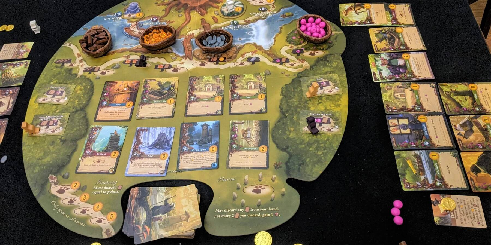
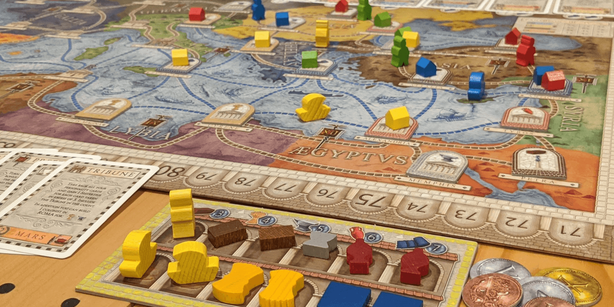

If you love Root, try these 3 board games


Root has become one of the most beloved board games because of its beautiful art, engaging combat system, and elegantly designed asymmetric factions.
While Root takes a while to learn, the payoff is more than worth it. There aren’t many games quite like it, but these recommendations capture different aspects of its play.
Also, here are our favorite Root expansions. All of them add so much to the game, so we want to explain why you might want them:
- The Underworld expansion adds the Crows and the Moles, which are 2 of our favorite factions. It also comes with the new Lake map and Mountain map to change things up.
- The Exiles and Partisans deck is more advanced and includes more cards with strategic abilities.
- The Riverfolk expansion introduces the quirky Lizards and Otters and lets you play with a 2nd Vagabond. This is geared more toward 4-6 player games.
- The Marauders expansion features the Warlord and the Keepers, 2 complex but intriguing factions. It also includes an “Advanced Setup” for seasoned players.
- We also love the Hirelings expansions which add a ton of pieces and powers for players to control, but at the moment they are sold as 3 separate purchases (we got them all together from Kickstarter). It unfortunately looks like you currently can't find them as one big pack, but you can find them here for Underworld, Riverfolk, and Marauders.
Northgard: Uncharted Lands

Northgard: Uncharted Lands is a deck-building and territory control game set in the viking era, based on the video game of the same name. Despite being an adaptation, it’s got some great strategic depth and exciting moments.
Like the video game, this board game has multiple victory conditions. If you control 3 large territories that each contain a Large building at the end of a year, you win, just like a Domination victory in Root! Otherwise, whoever has the most Fame at the end of the 7th year wins.
On your turn, you play a card to Move, Explore, Recruit, or activate another effect. New cards can be added to your deck at the end of your turn or through upgrading cards with Lore. Each clan has access to unique cards, and the card play is a standout aspect of Northgard.
Players start out with a handful of warriors in close quarters to other players. As players use the Explore action, new map tiles will be added to expand the world, uncovering resources and hostile monsters. While you are primarily working to defeat your opponents, you must also respond to any monsters that threaten your territory!
This is a very new game released in 2022, but we think it deserves the top spot here. We absolutely loved it after our first few games, and it plays smoothly and was easy to learn for a game of this genre.
Find Northgard on Board Game AtlasBuy Northgard: Uncharted Lands on Amazon
Everdell
Everdell is a worker placement card game with amazing woodland critter artwork. You grow a village and forage for resources, and while there’s no combat, you need to compete over action spots to achieve your goals and plans.
You start the game with only two workers and a hand of cards. Each card has a cost, so you must send your workers to collect resources for you. Many cards combo together in powerful ways, and you’ll learn to stretch a limited resources to play as many cards as you can. Some cards even upgrade into another for free, so you can capitalize on this to get ahead.
Production cards help you gain resources between seasons, while noble cards grant points at the end of the game. Finding the right balance between these is key. To make things more challenging, you have only 15 slots for cards in your village, so you must consider if each card is worth hanging on to!
If you’re looking for a game that moves away from combat but still has great strategic card play, Everdell is a good game to try next. There are also numerous expansions to keep the game exciting over many plays.
Buy Everdell on Amazon
Concordia
Concordia is a mercantile strategy game where you grow your map presence and secure valuable resources using cards. There’s also no combat in this one, but the way you spread presence over the map and strategize around your cards has some similarities to Root.
On your turn, you discard a card from your hand and resolve its effect. You can move and build trade posts with the Architect, produce resources with the Prefect, or acquire new cards with the Senator. Timing your cards is very important, as you need to spend a whole turn to pick your cards back up again!
There is no inherent asymmetry as everyone starts with the same cards. However, the cards you acquire determine not only your available actions, but your *end game scoring conditions* as well. Some cards score per unique good you control, while others score for each region you’re located in. Even if someone has an overwhelming map presence, they will win only if their cards grant points for that strategy!
If you love the strategic territory control of Root but sometimes wish your buildings *just stayed there*, Concordia is a great game to try. It’s also fairly simple to teach, at least compared to all of the unique factions in Root!
Buy Concordia on Amazon
Honorable Mentions
These are some games that vary much more in genre and size while still featuring asymmetry and/or territory control.
Watergate is an asymmetric card game for 2 players based on the Watergate scandal in the US. One player uses Nixon’s deck, while the other player uses the Post’s deck. Each deck is entirely different, featuring different historical Events and people that provide powerful effects. Both sides play cards to move evidence tokens closer to themselves on a track, and at the end of the round, they can place it on the board. The Post player places it face up, trying to connect paths to Nixon and informants. Nixon however places evidence face down, showing its redacted side, attempting to block these connections! A really cool experience for 2 players.
Buy Watergate on AmazonScythe is a popular strategy game that mixes resource management, area control, and asymmetric player factions. Unlike many combat-oriented games, players are able to easily diversify their strategies in Scythe. Non-combat objectives include upgrading actions, building structures, and deploying workers for resource production. Playing defensively, keeping your territory safe, and focusing on production is not only a viable winning strategy but necessary depending on how your opponents play. Scythe is definitely worth checking out, and it has tons of expansion content to build on the experience!
Buy Scythe on AmazonRising Sun is an awesome territory control game that adds a bit of deception into combat. Everything in Root is turn-based, but in Rising Sun, the combat planning phase is done simultaneously and in secret! This lets you mind-game your opponent in a whole new way. The units you acquire also follow unique combat rules which adds some incredible asymmetry to the game. The miniatures for these units are exceptionally high quality, making for an awesome tabletop experience.
Buy Rising Sun on AmazonFind Rising Sun on Board Game Atlas
Did we miss any good recommendations? Have other feedback for us? Send us an email at support@spiralburst.com and let us know!